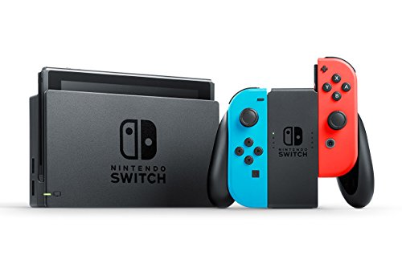
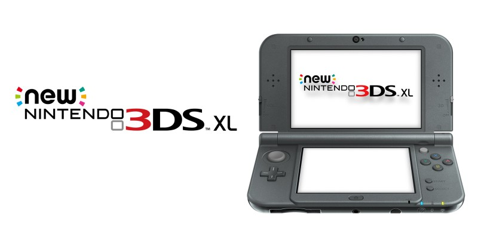

Nintendo Switch

The Nintendo Switch is a video game console developed by Nintendo and was released on March 3, 2017. It is a hybrid console that can be used as both a stationary and portable device. Its wireless Joy-Con controllers, which include standard buttons and directional analog sticks for user input, motion sensing, and high-definition tactile feedback, can attach to both sides of the console to support handheld-style play. They can also connect to a Grip accessory to provide a traditional home console gamepad form, or be used individually in the hand like the Wii Remote and Nunchuk, supporting local multiplayer modes. The Nintendo Switch's software supports online gaming through standard Internet connectivity, as well as local wireless ad hoc connectivity with other Switch consoles. Nintendo Switch games and software are available on both physical flash-based ROM cartridges and digital distribution via Nintendo eShop.
Nintendo 3DS

The Nintendo 3DS is a handheld game console produced by Nintendo. It is capable of displaying stereoscopic 3D effects without the use of 3D glasses or additional accessories. Nintendo announced the console in March 2010 and officially unveiled it at E3 2010 on June 15.[6][7] The console succeeds the Nintendo DS, featuring backward compatibility with older Nintendo DS video games.